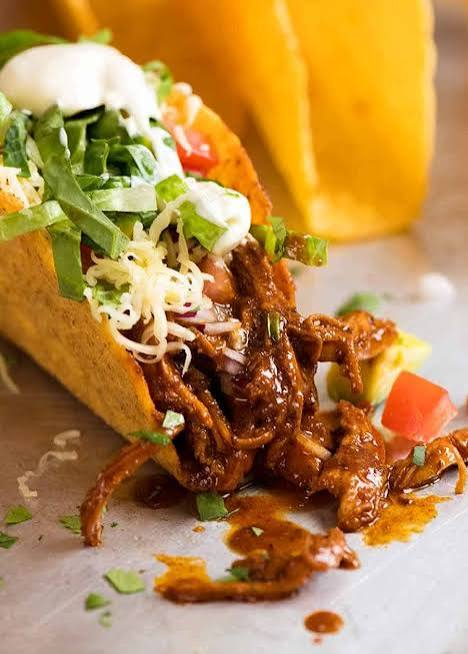

Home
Reicpe of Chicken Taco

Chicken tacos are a traditional Mexican dish made with seasoned meat served inside soft or crispy tortillas. They are typically topped with fresh vegetables, cheese, herbs, salsa, and lime, creating a flavorful combination of savory, spicy, and fresh ingredients.
Ingredients
- Corn or flour tortillas
- Chicken breast or thighs
- Onion
- Garlic
- Chili powder
- Ground cumin
- Paprika
- Salt
- Black pepper
- Lime juice
- Lettuce
- Tomatoes
- Avocado
- Shredded cheese
- Cilantro
- Salsa
Steps
- Cut the chicken into small pieces.
- Season the chicken with chili powder, cumin, paprika, salt, and black pepper.
- Heat a little oil in a pan and sauté the onion and garlic.
- Add the seasoned chicken and cook until it is browned and fully cooked.
- Squeeze fresh lime juice over the cooked chicken.
- Warm the tortillas in a dry pan or microwave.
- Fill each tortilla with chicken, lettuce, tomatoes, avocado, and shredded cheese.
- Top the tacos with cilantro and salsa.
- Serve immediately with extra lime wedges.